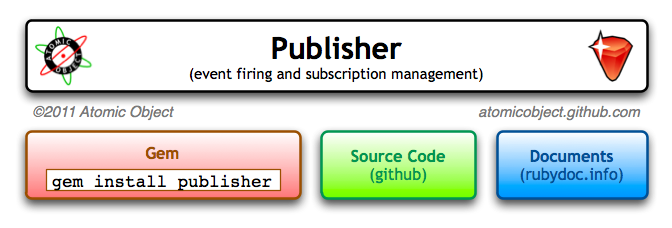

<map name="GraffleExport">
	<area shape=rect coords="45,169,279,190" href="http://rubygems.org/gems/publisher">
	<area shape=rect coords="25,131,299,198" href="http://rubygems.org/gems/publisher">
	<area shape=rect coords="496,131,646,198" href="http://rubydoc.info/gems/publisher/frames">
	<area shape=rect coords="321,131,474,198" href="http://github.com/atomicobject/publisher">
	<area shape=rect coords="471,102,646,120" href="http://atomicobject.github.com">
	<area shape=rect coords="25,102,179,120" href="http://atomicobject.com">
	<area shape=rect coords="583,28,638,83" href="http://atomicobject.github.com">
	<area shape=rect coords="32,25,93,86" href="http://atomicobject.com">
</map>

